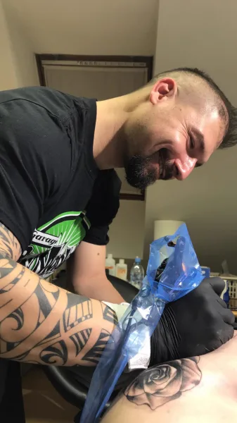

Studio


„Pri postopku sterilizacije uporabljam ultra zvočni čistilec in avtoklav. Avtoklav je komora v kateri poteka parna sterilizacija pod visoko temperaturo (126 °C) in visokim tlakom (3 bari).“tattoo-pigment.com/sterilizacija.php
„Po končanem tetoviranju se uporabljeno iglo odvrže.“tattoo-pigment.com/sterilizacija.php